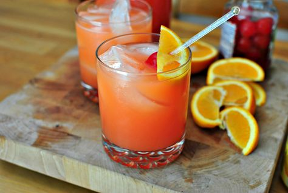

POG, or Passion fruit-Orange-Guava, is a tropical juice drink created in 1971 by a food product consultant named Mary Soon who worked for Haleakala Dairy on Maui, Hawaii. It consists of a blend of juices from passionfruit, orange, and guava (hence POG).